| 微信第一风尚自媒体 |
范主说：我也喜欢纸质书，但我更喜欢Kindle:)
（文|直树，授权商务范发布)
写在前面
接触Kindle也有近两年时间了，从接触它的第一天起，出门就基本没少过它。在我眼里，它是恋人、是良师、是诤友，我很享受这种感觉。我很早就想基于当前Kindle普及文章较少的局面，去写一篇脉络相对比较清晰的关于如何适当运用Kindle进行有效阅读的文章。
如你所见，这篇文章是集Kindle的科普、入门、进阶的综合分享，算是补单身汪们的一个情人节福利吧，以下是内容脑图：

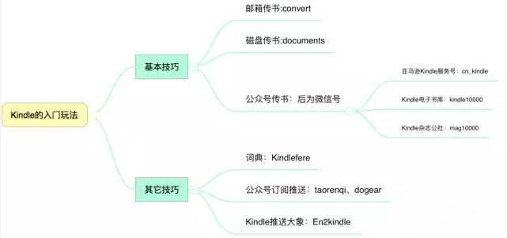
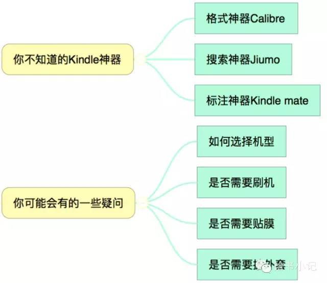
原谅我用这句话开场:）
什么样的人适合Kindle？
想专注阅读的人
世界上有什么习惯的人，就有什么样的产品。喜欢专注娱乐的人有了Ipad，喜欢专注游戏的人有了Psp，而喜欢专注阅读的人就有了Kindle。Kindle作为专注阅读的不二利器，是目前同类产品所不可比肩的。
经常出差、旅行的人
出差、旅行少不了坐火车、灰机的场景，这时候Kindle用处就大了。 从南方坐到北方，看完一本50W的书问题不大。
有语言学习诉求的人
不论是英语、日语、法语亦或是文言文，在kindle里你都可以找到对应的靠谱词典， 内置的不够可以去相关网站下载，下文中会有详细介绍。
经常坐公交、地铁的人
这点在北上广深的朋友大概体会会深一点，因为房租而不得不住得远的你，在漫漫上班的过程简直难受，然而有了Kindle，那简直biu一下就到站了。笔者曾经住在深圳宝安西乡，要去南山科技园上班需要很长的路，经常就通过Kindle来规划时间，基本几天就能看下来一本书，碎片化时间的利用简直不要太好。
电子书深度用户
有些朋友一直是电子书的深度用户，但是却想保护眼睛，有办法吗？有！Ink屏的Kindle帮你搞定一切。此处需要注意一下，像Kindle fire之类产品是没有Ink屏而是Ips屏的，购买时须注意。
有长期阅读规划的人
有一类人，Ta们深谙GTD之道，知道自己需要什么，有着比较清晰的规划，在Ta们的脑子里，这一年要看的书都已经列出来了，缺的就是一个阅读器能把它们都装进去。想要既省钱又省空间，还容易整理归纳和总结，是否有办法？答案：有，Kindle配合Kindle Mate的搭配完全可以搞定。
经常无聊又不知道做什么的人
如果你经常发呆又不知道做什么，那么告诉你，kindle绝壁是你消灭时间的好工具，看看东野圭吾的小说、看看金田一的漫画，一天很快就过去了，并且还能够增长见识，何乐而不为呢？
关于书籍来源
经过筛选知乎、微信、微博、豆瓣、简书等平台的高质量信息之后，我把最干的网站总结后分享出来给大家，继续往下看☟
付费的
亚马逊
官方网站，就不用说了，不缺米的及时把钱冲上，5G云储存给你慢慢享用，买了的书只要没有在云端上删除，都可以重复下载的，灵活度非常高，当然亚马逊也有经常做限免以及免费的书籍，多多关注就好，直送链接：http://www.amazon.cn
Kindle114
他们的slogan是kindle中国爱好者交流使用经验和电子书、漫画、杂志资源共享互助的交流社区，这网站也是我经常使用的，里面资源非常多，如果不介意付点小费的话，还是蛮建议使用的，里面可以找到很多质量很高的中、英文电子数据书籍，格式比较全，直送链接：http://www.kindle114.com
mlook看书
这是一个走精校电子书路线的网站，提供精致的书籍和服务,包括各个平台的App,Kindle和多看的邮件推送，直送链接：https://www.mlook.mobi
免费的
Readfar
读远是一款很有情怀的网站，是一个喜欢《瓦尔登湖》的学生于2013年开发出来的，那时候他刚刚在日亚买了个KPW，出于对那种生活的向往，他决定好好看看书，然后又不满足于当前电子书相关网站的质量，于是自己写了一个，这个行动力简直令人感动。
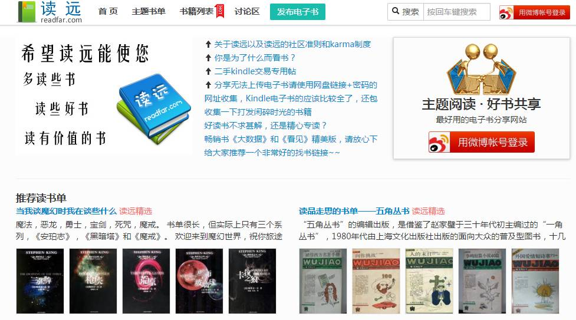
➤直送链接：http://readcolor.com
Library Genesis
Library Genesis是一个拥有100多万本图书让你随意下载的网站(其中99%是科学著作且难以买到)，它的数据库约有10TB之多，有了这个网站基本再也不用去淘宝代购英文书籍了，这本《The Big Book Of Vice》就是笔者刚下载的，而图2为亚马逊对应的购买页。
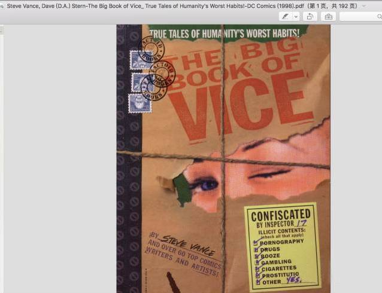
➤直送链接:http://gen.lib.rus.ec
gutenberg
维基古腾堡计划，这是一个开放的资源共享计划，10万余册线上藏书可以下载。有人曾一口气下了王尔德的狱中记、雷丁监狱之歌还有剧本无数。下图是笔者测试王尔德的收获，第一次搜索会在左边显示匹配作者，然后选择了作者还会有具体的分类选择，从检索到下载十分方便，以下两张图分别是搜索后的和下载后打开的截图。
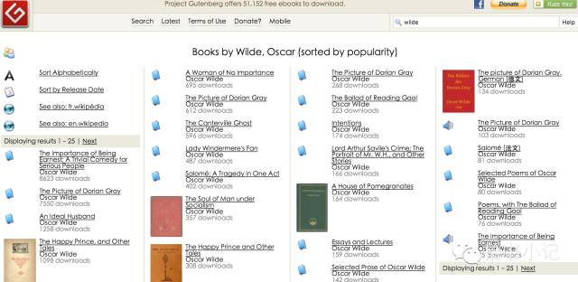
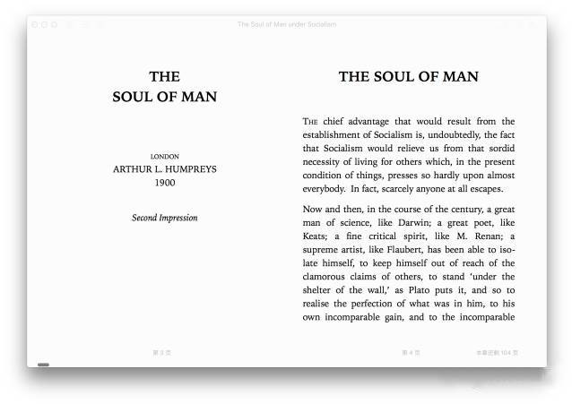
➤直送链接:http://www.gutenberg.org
一些入门玩法
基本技巧
>>>>邮箱传书
这个技能是必备技能哈，你如果有啥mobi、pdf格式的书想放在kindle上看的话，可以通过这招来转化为kindle的格式azw3。具体方法如下图1，图2是本主进行测试时候做的格式校验对比图，测试书籍为池建强老师的《Mactalk·人生元编程》。
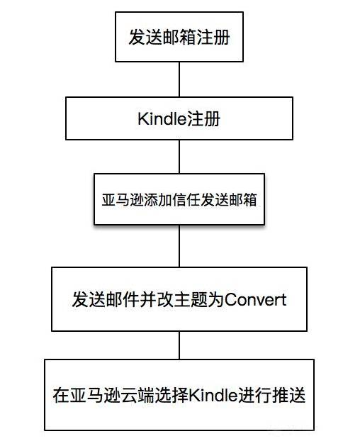
图1
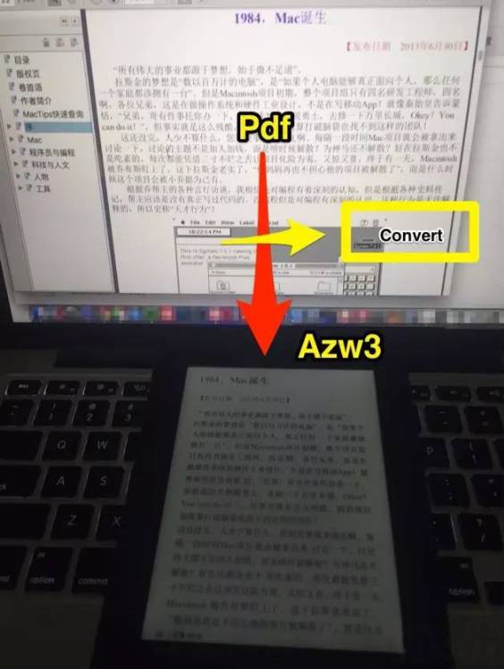
图2
>>>>磁盘传书
此方法最简单实用，为快速通道，没有经过云端。也就是说，资料传输之后是不会出现云端5G里面的，这样的话就不方便误删后的二度下载了，建议慎用，具体操作如下：
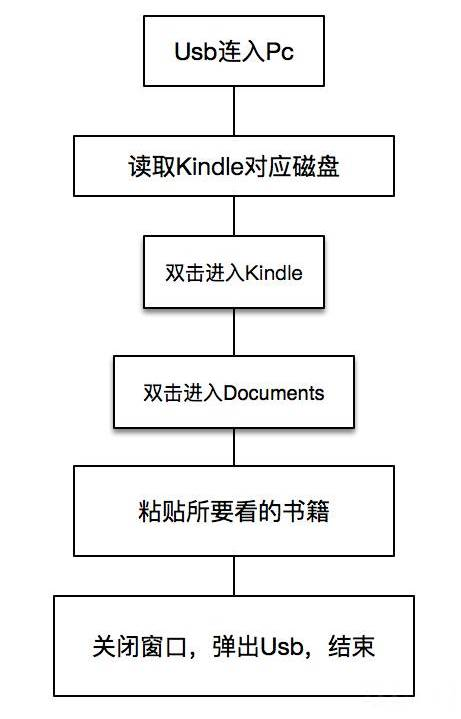
>>>>公众号传书
相信大家都有听过公众号可以传书吧，其实不论是亚马逊官网还是非官方都是有相关的公众号平台给予技术支持的，我这边就各罗列几个靠谱的，首先是亚马逊Kindle服务号，微信号：cn_kindle，这是Kindle的官方微信之一，当你绑定了你的Kindle账号后，以后只要遇到好文章，然后顺手点击右上角的点点点，你会发现可以直接推送到Kindle里，相同的方法在大象也可以实现哈。
具体可参考下图：
接着再介绍两个非官网的公众号给大家，第一个是Kindle电子书库，微信号：Kindle10000；第二个是Kindle杂志公社，微信号：Mag10000。大家只要关注后即有对应提示进行后续操作就可以了，十分简单高效。
其他技巧
>>>>Kindle词典的下载
Kindlefere，这个网站里面有一个专门的kindle 字典的下载页面。同时对于 kindle 字典怎么用？如何向 kindle 添加字典？kindle 字典安装步骤是怎样的？这类问题，这个页面都做出了确切的答案。另外Kindlefere还在不断的搜集增加各种稀缺的字典资源，如 Kindle 古汉语字典、kindle 程序字典以及各种小语种 Kindle 字典等等，直送地址：http://kindlefere.com/dict
>>>>公众号的整合推送
此类网站方法的使用玩法大抵相同，先是网站内注册账号，然后绑定亚马逊推送的邮箱，再次就是将平台提供的地址添加到亚马逊kindle页面的信任列表里，最后进行定时推送就可以了。比较靠谱的网站我推荐两个：taorenqi和dogear。笔者正在用的是dogear的推送服务，我最喜欢看中文传媒了，里面干货多多:）当然这种订阅方式也很容易阻碍长篇阅读的节奏，大家看着用吧。
1.Dogear
中文名狗耳朵，全文RSS和微信公众号推送服务，支持Kindle、多看和Nook等移动电子阅读设备，直送链接：http://dogear.cn/
2.Taorenqi
专为亚马逊Kindle提供公众号订阅推送服务的，他家的口号是：一年三十块，一天不到一毛钱，直送链接：http://vip.taorenqi.com/index.shtml
>>>>配合大象也能玩
相信大家都知道大象（Evernote）吧？作为信息整理的强大工具，口碑一直非常好，即使近些年出了点问题，也无法阻止我对它的喜欢。那么，用Kindle上看到喜欢的内容，是否可以推送给大象呢？ 可以的哦。详细方法参考简书邱凯达的说明：http://www.jianshu.com/p/237c61ad330a
你不知道的Kindle神器
格式神器Calibre
Calibre是一款电子图书管理软件，其提供的“一站式”的电子书解决方案，可以基本满足读者对电子书需求，甚至可以利用它组织成属于自己的电子图书馆，它的功能更是多种多样，不仅可以用它对图书进行格式转换，归类整理电子书，还可以将文本图像材料、在线内容（RSS）加入并转换为电子书。更重要的是Calibre是免费的、开源的，拥有跨平台的设计，可在Linux，OS X和Windows操作系统中运行。
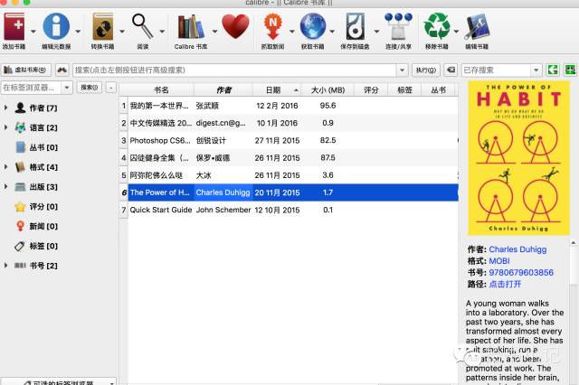
➤直送链接：http://kindlefere.com/tools#calibre
✄彩蛋：细心的朋友应该还会发现，该页面下面还有很多软件，就补一一列举了，总之，工具很多，适合最重要。
搜书神器jiumo
鸠摩是一款图书搜索引擎，绝对是一个搜书神器来的，它的搜索范围令人发指，来源包括Yun.baidu，pan.baidu，disk，mush，wodemo，xiaoshuotxt，bank，feng，kindle114，cnepub，mydoo，kindle10000在内的诸多Kindle书籍的内容提供平台。
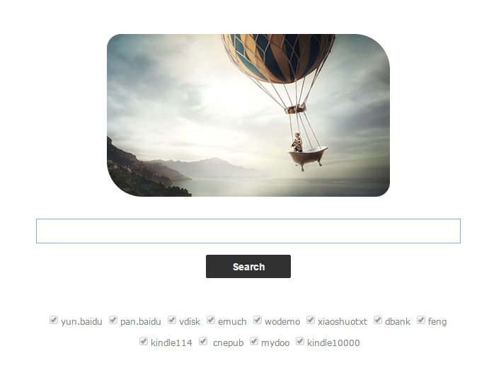
➤直送链接：http://www.jiumodiary.com
标注神器Kindle Mate
Kindle Mate是运行在Windows计算机上管理Kindle设备内容的辅助工具。通过Kindle Mate，您可以在计算机侧同步、浏览管理Kindle设备上的内容，回顾阅读笔记或进行英语生词本的整合学习。另外，Kindle Mate还是款免费软件，你不仅可以永久免费使用，还没有无任何功能与时间的限制。当然如果你是OS X系统也是能解决的， 通过安装虚拟机以及安装一个windows系统就可以了。
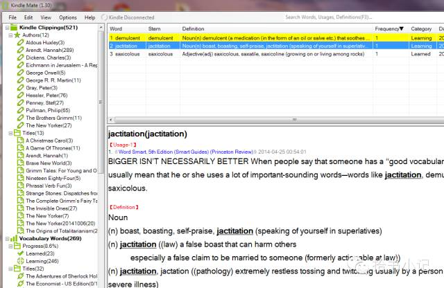
➤直送链接：http://www.kmate.me/download
目前最新版本为1.31，开发者Harvey正紧锣密鼓进行1.35版的研发，大家静候佳音:）
你可能会有的一些疑问
如何选择机型？
下图来自官网，是当前比较流行的几款机型，可以说已经适应各个消费端的人群了。 其实有不少朋友问我买什么机型好？我建议都是加点预算买最好的。那句老话说得好：单反穷三代，kindle富一生。从经验看来，kindle不上背光就和单反不上全副一个道理，在资金允许的前提下，绝对是能买多好就买多好的。
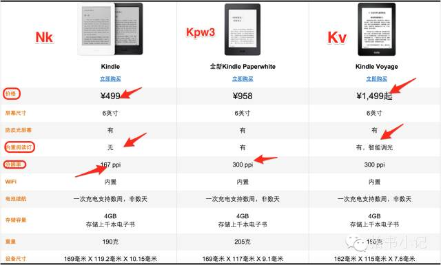
⊙这里的价格只是亚马逊官方的，大家购买的时候完全可自行通过日亚、美亚购买，或者去X宝找代购，再或者通过咸鱼同城等等，二手物品交易的时候务必要小心一点。
是否要刷机？
这里说的刷机，统一解释为刷多看。我们在做一件事儿之前，就应该先考虑做这个东西是否对于自己的必要性，考虑完了再去做。作为一个曾经把固件降到5.4.3.2再刷多看的人，我想告诉你，刷这玩意儿真的没多大必要！
多看系统除了可以支持Epub和优化排版外，其他特点对我而言还是有点鸡肋的，尤其是不支持Azw3格式这点。最后，是否要刷机的问题你还可以类比到Iphone是否越狱的问题，总之没事儿做别作死就对了:）
是否要贴膜？
如此耐操的东西你确认要贴膜吗？告诉你，不贴也安全得很！贴了更影响手感好吗？ 相信很多人都没贴过，并且用了一年多没啥痕迹:）
是否需要皮外套？
我的Kpw2带了一个原生的套，带休眠的，自觉非常好用，也做到了基本的保护机身，单手可进行特技开合外套。X宝的皮套质量良莠不齐，款式也多种多样，大家完全可以根据自己的喜好去买适合自己的，我就差点入手了一个神奈川冲浪里的外套，最后还是忍住了！
Kindle of my eyes
说句心里话，我是个很喜欢纸质书的人，也很享受用笔记录一切的感觉，因此经常会用多种类型的笔来记录自己喜欢的句子。然而，随着时代的变迁，我们需要适当地去做一些变化，随着电子书的普及，越来越多人关注到了Kindle以及相关延伸产品的开发和普及上，我很敬佩这群人，也希望他们能带着Kindle的精神，直到把他们的产品做到极致。也希望在不久的将来，我可以在那个Donate上面献上一笔有重量的东西。
（本文经授权商务范发布|来源：微信公众号：拾书小记；公众号ID：shishuxiaoji）
『 圈子 』
只谈风月，不谈国事
每日逼格养成计划请长按此QR码：
投稿、商务合作，联系邮箱 bfaner@vip.163.com
![]()